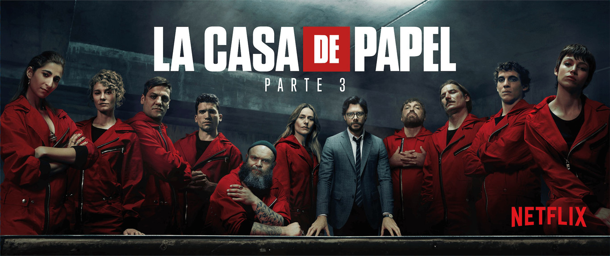

La casa de papel es una serie de televisión española creada por Álex Pina y producida por Atresmedia y posteriormente en Netflix. Protagonizada por Úrsula Corberó, Itziar Ituño y Álvaro Morte, se presentó en el III Festival de Televisión de Primavera en Burgos en marzo de 2017 1 y el 2 de mayo de ese mismo año se estrenó en la cadena española Antena 3, que distribuyó las dos primeras partes de la serie en España, antes de que Netflix la adquiriera a finales de 2017, quien la editó y reeditó, lanzó las dos partes en todo el mundo. La serie se basó el la forma de que tenía el atracador de bancos Willie Sutton,2 de concibir sus más de 100 golpes y 2 millones logrados en las décadas de 1920-1950, mediante disfraces, engaños y sin llegar a disparar a nadie.34 La serie gira en torno a un asalto de varios días preparado contra la Fábrica Nacional de Moneda y Timbre, ubicada en Madrid, España. Un hombre misterioso, conocido como «El Profesor», está planeando el mayor atraco de la historia. Para llevar a cabo el ambicioso plan, se recluta a un equipo de ocho personas con ciertas habilidades que no tienen nada que perder. El objetivo es entrar en la Fábrica e imprimir 2400 millones de euros. Para hacer esto, el equipo requiere once días de reclusión, durante los cuales tendrán que lidiar con las fuerzas de élite de la policía y 67 rehenes. La serie se estrenó el 2 de mayo de 2017 y acabó el 23 de noviembre del mismo año, con un total de 15 capítulos. Netflix adquirió los derechos de distribución de la serie posteriormente, motivo por el cual su audiencia se ha extendido hacia otros países, generalmente bajo el nombre de Money Heist,6 y con 22 capítulos en total, reorganizados del original.El 18 de abril de 2018, ganó un Premio Emmy Internacional en la categoría de "mejor drama", hecho inédito en la historia de la televisión en España8, renovando la serie con dicha plataforma para una tercera temporada estrenada en 2019. El 19 de julio de ese mismo año se estrenó su tercera parte en Netflix siendo el preestreno en las playas de Málaga el día anterior.10 El 3 de abril de 2020 se estrenó la cuarta parte. El 31 de julio de 2020, Netflix anunció que la quinta parte de la serie sería la última. Es la serie de habla no inglesa más vista en la historia de Netflix.